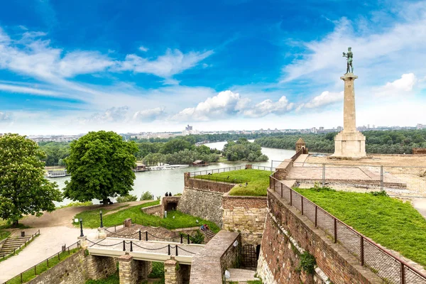
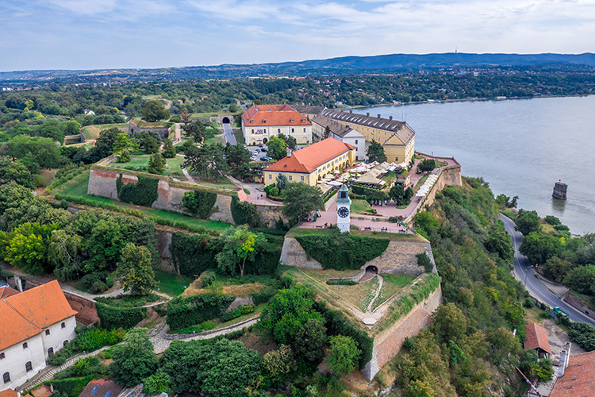
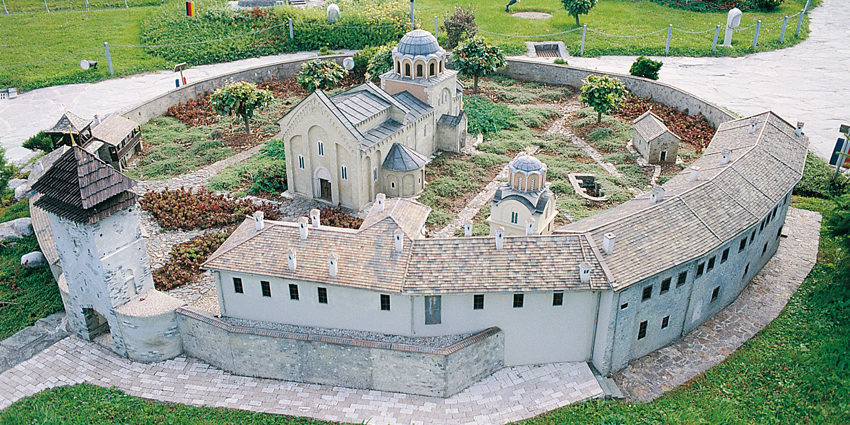
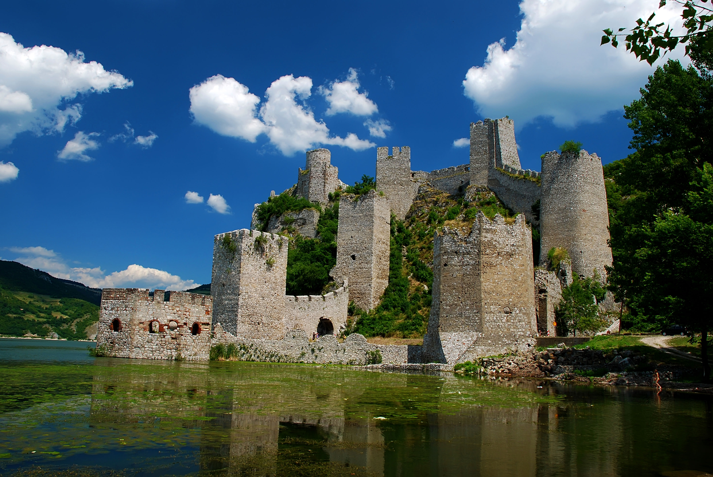
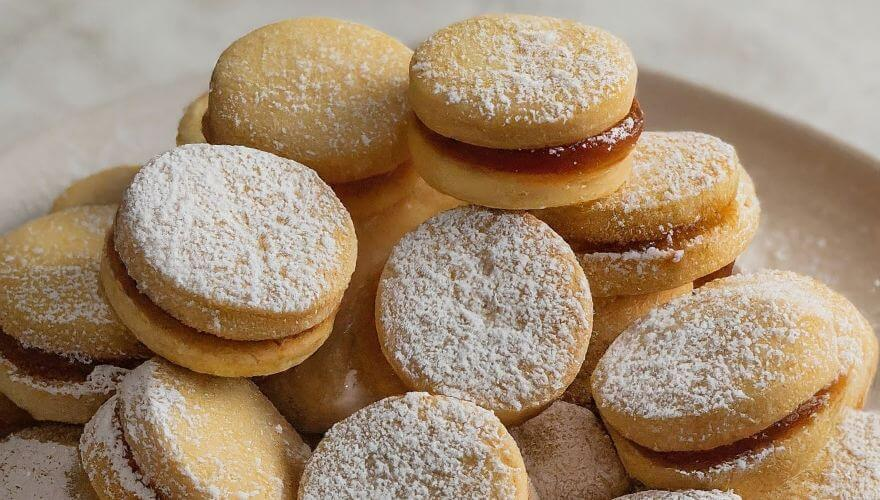
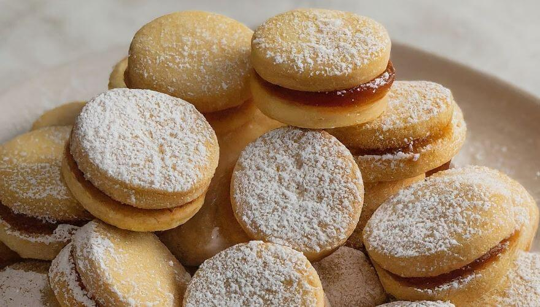

Monuments
Serbia is a land of vibrant culture, historic landmarks, and scenic landscapes. From the bustling streets of Belgrade to the medieval
fortresses of Novi Sad and the picturesque monasteries of Fruška Gora, each site tells a story of the nation’s rich heritage. Discover
the colors, traditions, and iconic sights that make Serbia an unforgettable destination.
SHOW MORE
SHOW MORE




 
